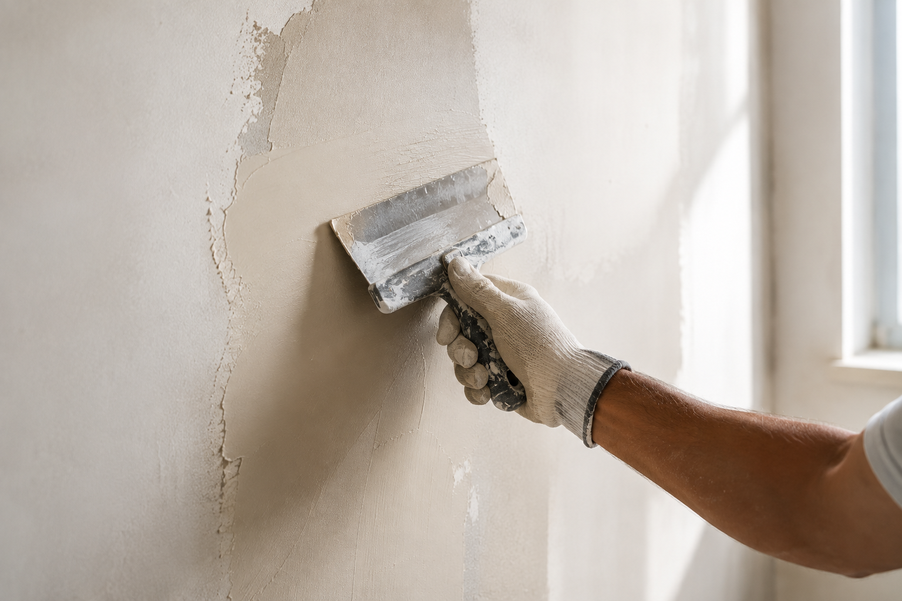
01
Filling & Smoothing
Precise filling work to remove cracks, uneven areas and imperfections while creating smooth surfaces.
Learn More →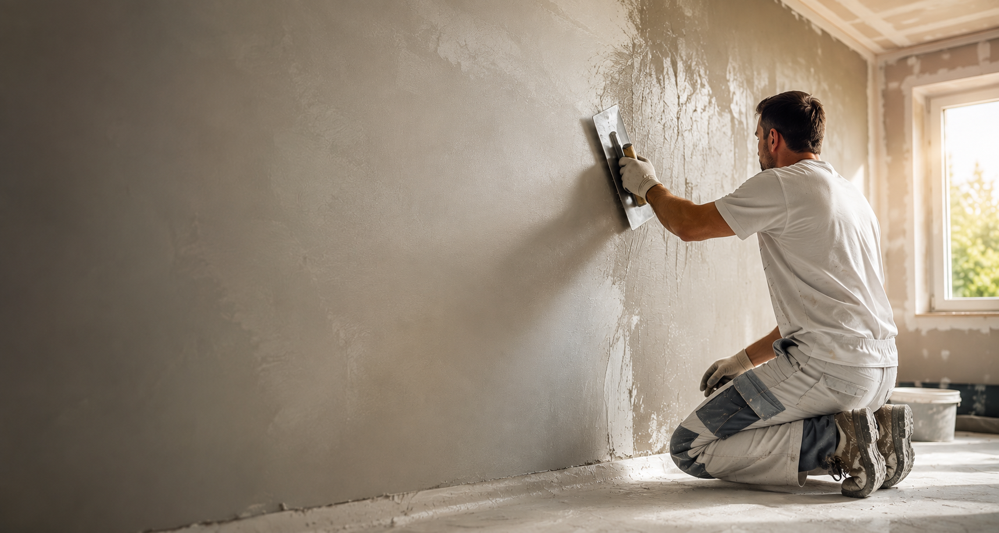
Professional plastering, smoothing and surface preparation for flawless walls and ceilings. From filling work and rendering to repairs and detailed finishing, we create durable surfaces ready for premium coatings.
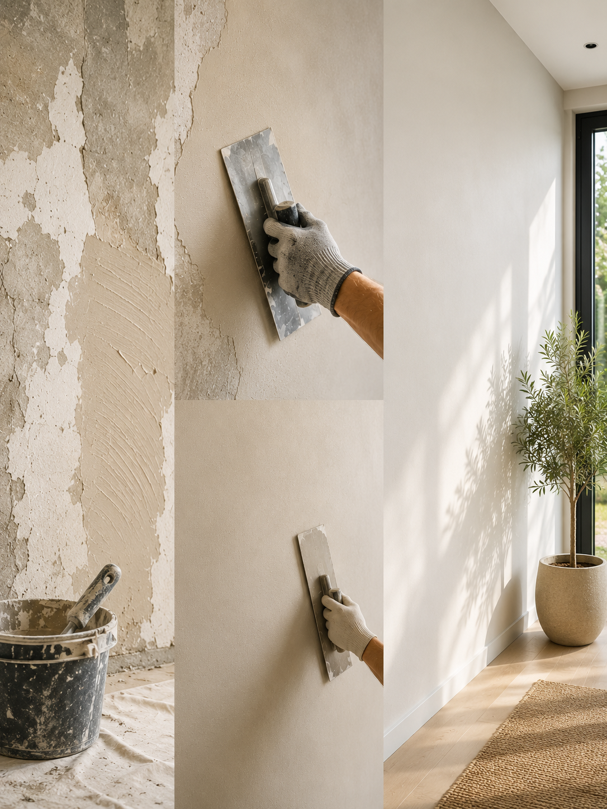
A high-quality painted surface is only possible when the substrate underneath is properly prepared. Professional plastering creates smooth surfaces, removes imperfections and provides the perfect base for future finishes.
Through careful preparation, precise repairs and skilled craftsmanship, we create durable surfaces that maintain their quality over time.
Smooth and even surfaces
Professional preparation
Long-lasting results
From surface preparation to final smoothing, every step is completed with precision and attention to detail.

Precise filling work to remove cracks, uneven areas and imperfections while creating smooth surfaces.
Learn More →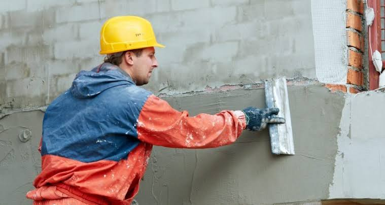
Professional plaster application using suitable techniques for walls and ceilings.
Learn More →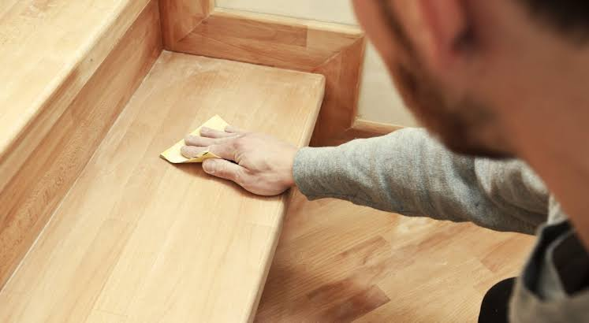
Careful preparation creates the ideal foundation for painting and premium finishing.
Learn More →
Repairing cracks, holes and damaged plaster to restore surface quality.
Learn More →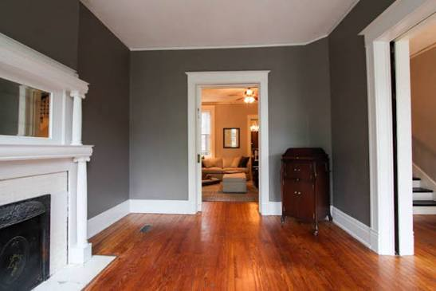
Creating refined and even surfaces ready for painting or decorative finishes.
Learn More →Paint alone does not create a premium surface. The difference comes from preparation, materials and professional execution.
 BEFORE
BEFORE
 AFTER
AFTER
Many wall problems are not only visual issues. Professional plastering creates a stable and refined foundation.
Repairing visible cracks and restoring surface strength before further finishing.
Creating balanced and level surfaces with professional smoothing techniques.
Removing damaged areas and rebuilding the surface professionally.
Filling defects and preparing walls for a flawless final appearance.
Transforming rough textures into smooth and refined surfaces.
Refreshing outdated walls with modern plastering solutions.
A precise workflow ensures every surface receives the correct treatment.
We inspect the existing surface and determine the correct plastering solution.
The area is cleaned, protected and prepared for professional work.
Cracks, holes and damaged sections are carefully restored.
Suitable plaster and filling materials are applied for the required finish.
The surface is refined to achieve a clean and even result.
The completed surface is prepared for painting or decorative finishing.
Every surface requires the right material based on condition, usage and desired final appearance.
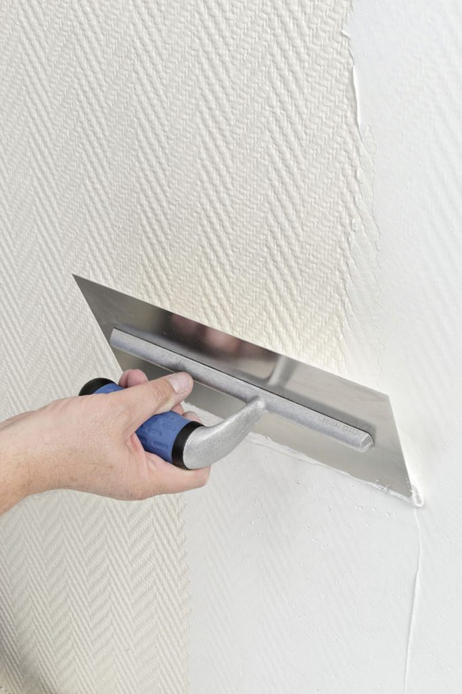
Creates smooth decorative surfaces with a premium refined finish.
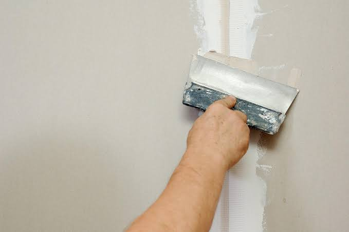
Used for cracks, holes and damaged areas requiring restoration.
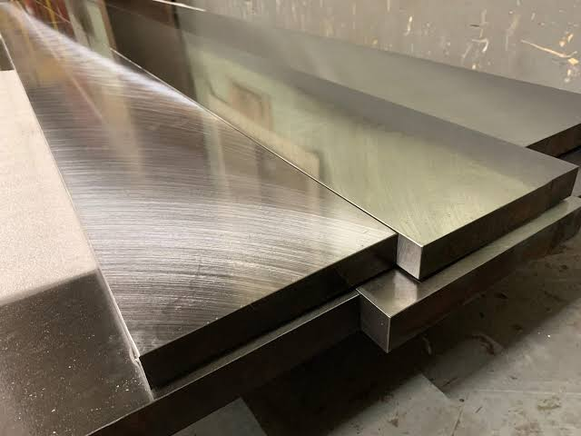
Professional solutions for clean and durable final surfaces.
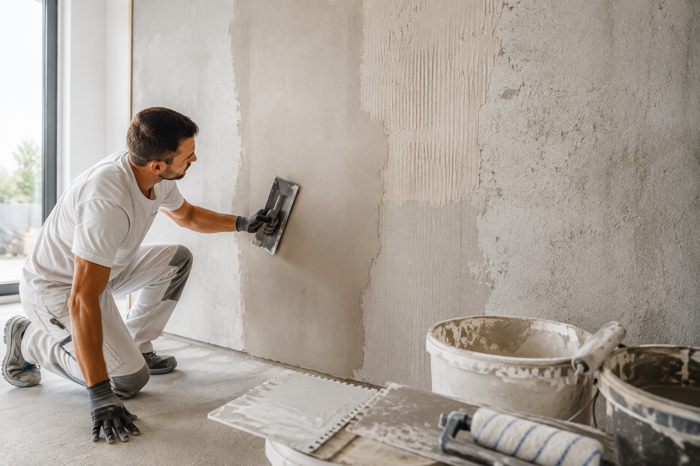
Suitable techniques selected according to surface requirements.
Professional plastering creates more than smooth walls. It provides the quality foundation needed for durable, clean and visually refined results.
Precise techniques create smooth and consistent surfaces ready for any final finish.
A carefully prepared substrate improves the quality and performance of every coating.
High-quality plastering helps maintain stable surfaces for years.
Perfectly finished walls create a premium and professional look.
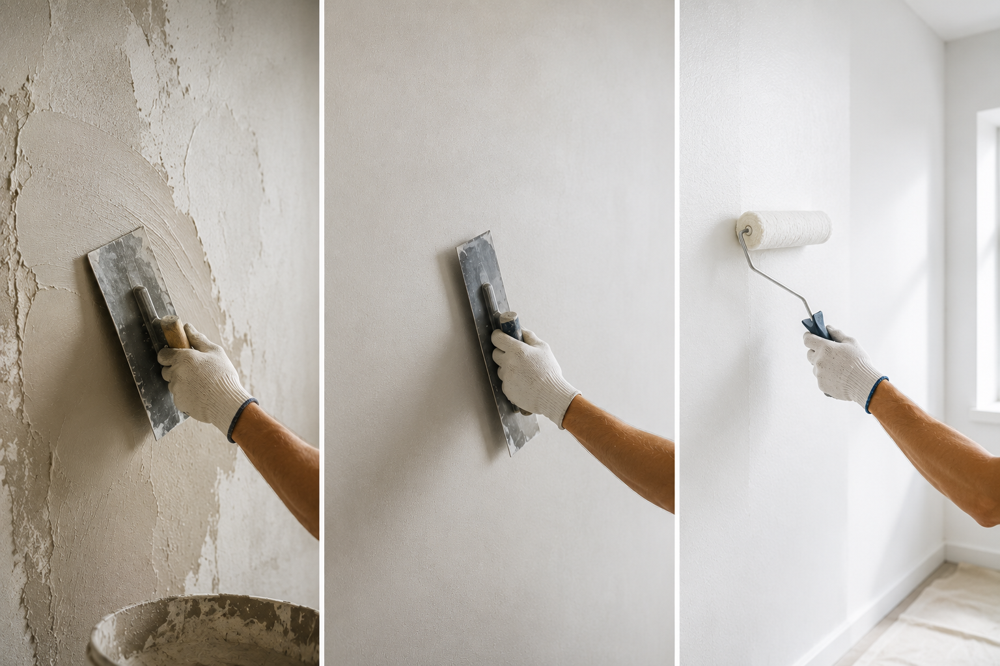
Professional plastering creates a stable and even foundation.
Smooth surfaces allow paint and coatings to perform better.
The final finish becomes cleaner, stronger and longer lasting.

Regular repairs, professional plastering and proper surface maintenance help preserve the condition, appearance and long-term value of your property.
Discover Property Preservation →From plastering and repairs to professional surface preparation, we create foundations built for beautiful and lasting results.